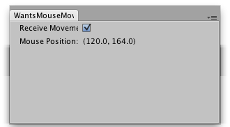

EditorWindow.wantsMouseMove
public bool wantsMouseMove;
Description 描述
Checks whether MouseMove events are received in the GUI in this Editor window.
If set to true, the window recieves an OnGUI call whenever the mouse is moved over the window.
Note: This function does not trigger Repaint() Automatically.

Editor Window that detects mouse moves when the toggle button is activated and the mouse is over the window.
// Editor Script that shows the mouse movement events // captured. With "Receive Movement" set to true the position of the // mouse over the window will be reported. // "Mouse Position" shows where the mouse is outside of the window.
using UnityEditor; using UnityEngine; using System.Collections;
public class Example : EditorWindow { [MenuItem("Example/Mouse Move Example")] static void InitWindow() { Example window = (Example)GetWindowWithRect(typeof(Example), new Rect(0, 0, 300, 100)); window.Show(); }
void OnGUI() { wantsMouseMove = EditorGUILayout.Toggle("Receive Movement: ", wantsMouseMove); EditorGUILayout.LabelField("Mouse Position: ", Event.current.mousePosition.ToString());
// Repaint the window as wantsMouseMove doesnt trigger a repaint automatically if (Event.current.type == EventType.MouseMove) Repaint(); } }